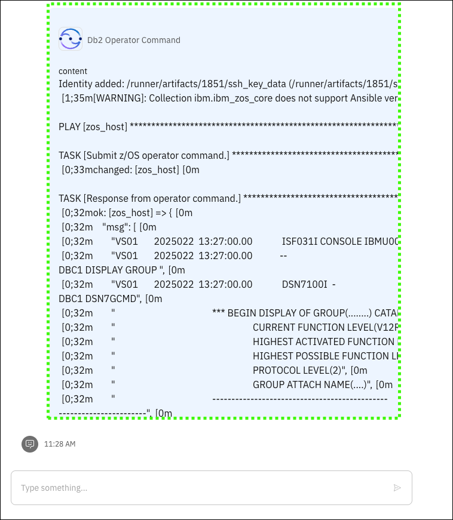

Scenario: Db2 versioning
Scenario overview
Speaker's script
We are now a new database administrator and need to quickly familiarize ourselves with the Db2 subsystem in our company's mainframe environment. We would like to understand more about Db2 on z/OS versus other platforms, the latest supported version of Db2, and the process for migrating to a newer version. Most early-tenure DBAs don't have this experience. We leverage an our virtual assistant that is customized with pre-existing automation the team has in place. And by leveraging the RAG grounded on Z-specific knowledge, we have confidence that the responses generated from our questions are accurate. We like the fact that they can go to one place to get answers to any question, on-demand, and can help automate some of our tasks, which in turn reduces our learning curve and increases our efficiency.
Responses from the virtual assistant are likely to change
Responses generated by IBM watsonx Assistant for Z are likely to change over time. The responses you see when you run the queries may differ from the screen images captured in the IBM watsonx Assistant for Z for Technical Sales Level 3 Demonstration Guide.
Prerequisites steps
None.
Prompts and sample outputs


Follow-up steps
A skill is triggered to use an Ansible playbook that runs the referenced operator command to return the Db2 details.
-
Click Apply.
Point out the Db2 version levels on the LPAR.


Cleanup steps
None.